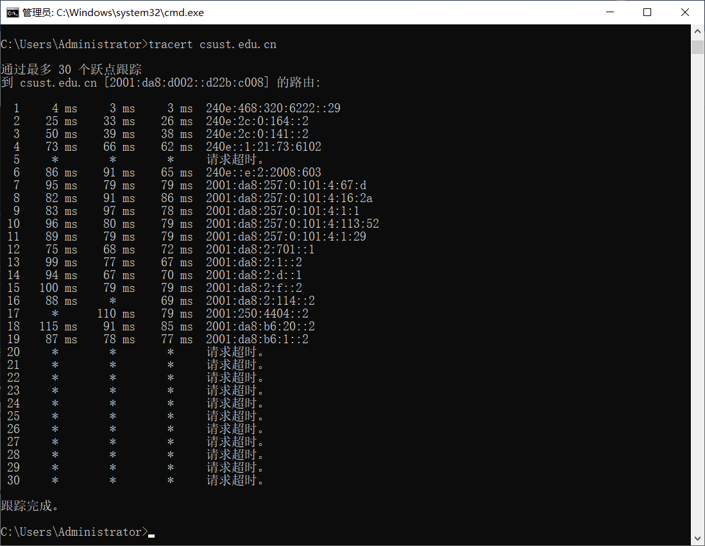

查看当前网络配置


测试校内IPV6连通性
版本号(version)：IP协议的版本为6
流量优先级(traffic class)：用于Qos（服务质量）中区分特定流量的优先级次序
流标号(flow label)：用来标识同一个流里的报文，这个部分通常适用在Qos管理中确认报文来自同一路径的同一流
有效载荷长度(payload length)：表名该IPv6包头部后包含的字节数为32
下一个首部(next header)：用来指明报头后接的第4层的报文头部的类型，该部分替代了IPv4报文头中的协议字段，下一个首部为58
跳数限制(hop limit) ：定义了一个报文的生命周期，代替IPv4报文头中的TTL，这里为255
源地址：该报文的来源IP地址
目的地址：该报文的目的IP地址